The week after Christmas comes down, a home can feel oddly empty, almost like something's missing even though nothing was actually broken.
All that red, green, and sparkle leaves, and what's left underneath often hasn't been styled in weeks.
The fix isn't redecorating from scratch, though. It's a deliberate transition, what comes down first, what gets swapped, what quietly stays right where it is.
These 20 ideas are organized around that whole process, not just a static winter mood board to scroll through.

20 Ways to Transition the Home
1. Keep the Mantel Simple
A mantel loaded with stockings and garland needs the biggest reset of any surface in the home once the season turns.
A few candles, a bit of greenery, and one or two neutral objects is enough once the holiday pieces actually come down.
This is often the last thing people get around to, which is exactly why it's worth prioritizing early.
A simple, uncluttered mantel reads as more intentional than an empty or overcrowded one.
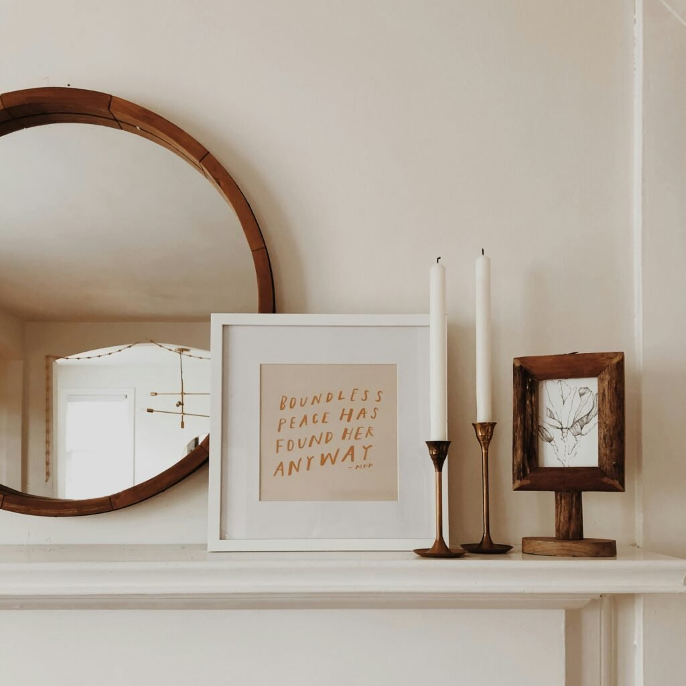
2. Display Cozy Knit Decor
A knit throw pillow cover, a chunky knit basket liner, or a woven wall hanging all extend the same texture language as the throw blankets mentioned elsewhere on this list.
This works well in smaller doses spread around the home rather than concentrated in just one room.
Knit texture reads as warm and tactile even in a photograph, which is part of why it's worth the small investment.
An easy way to round out the winter palette without much additional cost at all.
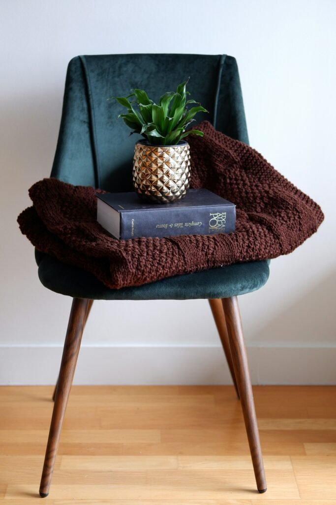
3. Add Winter Scents With Diffusers
A reed diffuser works alongside candles for scent that doesn't require an open flame running all day.
This suits a room that needs constant subtle scent rather than an occasional burst that fades fast.
Cedar, sandalwood, and amber all read as warm without leaning festive in the slightest.
A low-maintenance way to keep the sensory side of winter decor consistent throughout the house.
4. Set Up a Warm Beverage Station
A small station for hot chocolate, tea, or coffee gives winter a functional, daily touchpoint beyond just the decor itself.
This can be as simple as a tray with a kettle and a few mugs sitting on a counter.
It also doubles as a genuinely useful addition, not just a styling choice made for the sake of appearances.
A nice way to make the post-holiday slowdown feel a little more intentional than it otherwise would.
5. Add Ceramic or Stone Decor
A ceramic vase or stone object adds weight and texture that reads as permanent rather than seasonal.
This works well replacing a lighter, more festive decorative object that came down along with the rest of the holiday pieces.
Stone and ceramic both photograph well under warmer lighting, which pairs naturally with the rest of this list.
A small, durable addition that doesn't need to be swapped out again once spring rolls around.
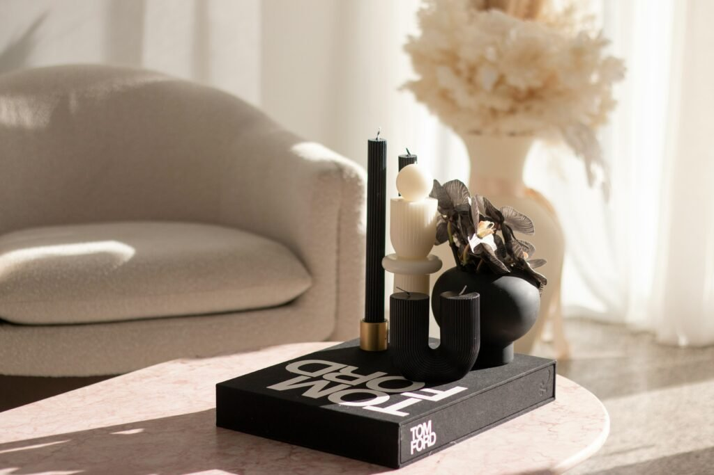
6. Layer Winter Bedding
Flannel sheets, a heavier duvet, and a few extra throw pillows make the bedroom feel just as seasonally appropriate as the living room.
This is one of the few ideas on this entire list that's purely about comfort rather than visible styling for guests.
Bedrooms often get overlooked in a seasonal refresh, even though they're used daily by whoever lives there.
Worth including specifically because it's so easy to forget about entirely.
7. Style the Entryway for Winter
An entryway often carries the heaviest holiday decor load of any room, since it's the first thing guests actually see.
Swapping a holiday wreath for a simple winter one, and adding a neutral runner or mat, resets the first impression fast.
This is a small space, so changes here stay quick and low-cost compared with larger rooms.
Worth prioritizing early, since it sets the tone for the whole home's transition.
8. Refresh the Coffee Table
A coffee table loaded with holiday books and ornaments needs a reset once the season actually changes.
A tray, a candle, and one or two neutral objects is usually enough to finish the job.
This is one of the fastest visual resets in the whole home, since it's really just one small surface.
Worth doing early in the transition, since it's one of the most-seen surfaces in the entire house.
9. Bring In Natural Woven Baskets
A woven basket replaces a Christmas gift-wrap station or ornament storage with something textural and useful year-round.
This works for blankets, firewood, or general living room storage, depending on what the room actually needs.
Natural materials like rattan and seagrass pair well with the earthy palette already in play elsewhere.
A functional piece that also happens to do real styling work on its own.
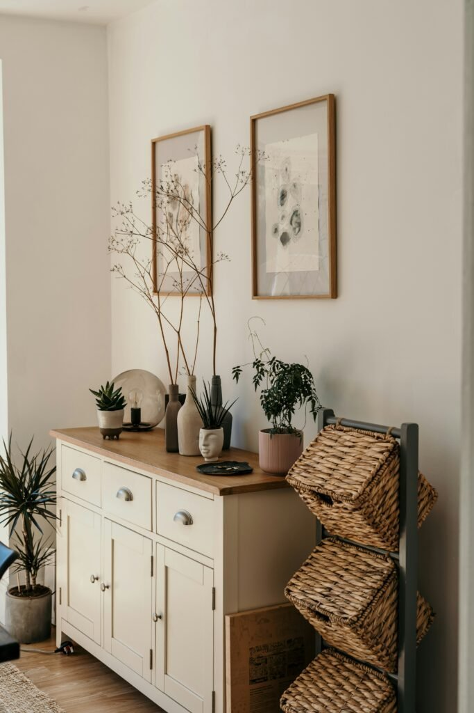
10. Use Scented Candles Strategically
Swapping a holiday-scented candle, pine, peppermint, for something more generally wintery, cedar, vanilla, amber, shifts the whole sensory feel of a room.
This is one of the cheapest changes on the entire list to make.
Placement matters as much as scent choice here, an entryway candle creates a first impression every single time someone walks in.
A small, low-effort swap with real impact on how a room actually feels.
11. Add Soft Curtains or Drapes
Heavier, softer curtain fabric adds both warmth and a sense of coziness to a room during the winter months.
This is a bigger project than most ideas on this list, since it involves an actual curtain swap rather than a quick accessory change.
It also helps with insulation in older homes, which is a practical bonus layered right on top of the look.
Worth prioritizing in whichever room gets used most during the colder months of the year.
12. Replace Holiday Centerpieces With Winter Florals
A poinsettia or holiday arrangement swaps easily for a more neutral winter floral, dried stems, pampas grass, a simple evergreen bundle.
This keeps the table from sitting empty once the holiday centerpiece actually comes down for good.
Dried arrangements in particular last the whole season without any real maintenance required.
A direct, one-to-one swap that genuinely takes minutes to pull off.
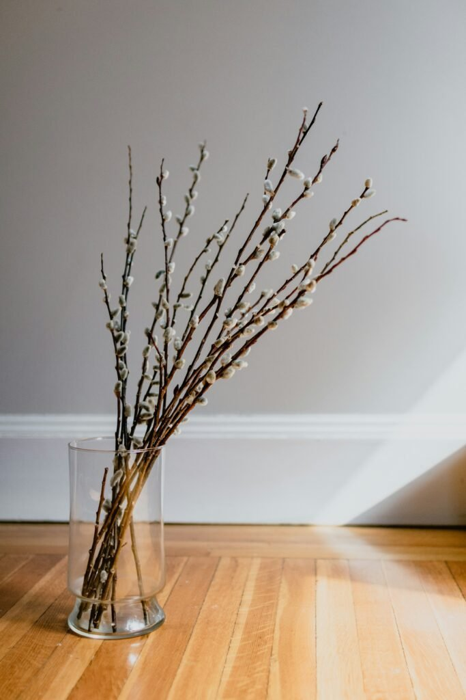
13. Bring In Wood Accents
Natural wood, a tray, a stool, a bowl, adds warmth that survives well past the holidays into the rest of the season.
This works especially well replacing a Christmas-specific wood piece, like an ornament display stand that's no longer needed.
Wood tones pair naturally with the earthy neutral palette shift described elsewhere on this list.
A small, low-cost addition with genuinely real staying power beyond just one season.
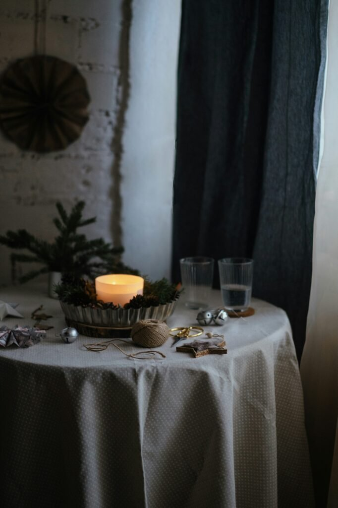
14. Add a Soft, Textured Rug
A textured rug underfoot adds warmth in a very literal, physical way throughout the colder months.
This is a bigger investment than most ideas on this list, but it's not seasonal at all, it works year-round regardless.
Layering a smaller textured rug over an existing one is a cheaper option if a full replacement isn't in the budget right now.
Texture underfoot does as much for a room's feel as anything visible up on the walls.
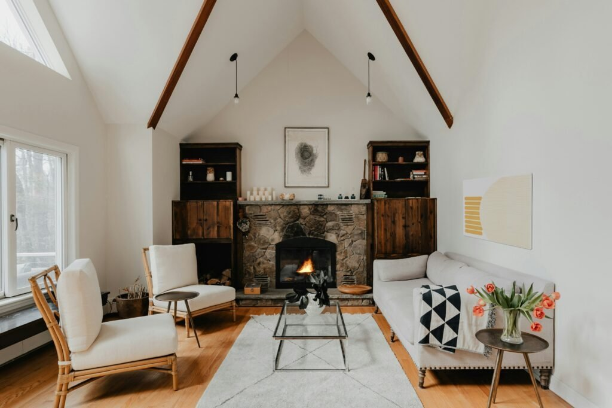
15. Display Winter-Themed Artwork
Swapping a holiday-specific print for something more generally wintery, a snowy landscape, an abstract piece in cool tones, keeps the wall relevant well past New Year's.
This can be as simple as rotating in a different print that's already owned and just sitting in storage.
Art is one of the easiest things to change seasonally without touching furniture at all.
It's also one of the first things guests actually notice walking in the door.

16. Add Oversized Pillows
Larger, softer pillows on a sofa or bed add volume that replaces some of what came down along with the holiday decor.
Neutral tones keep them from reading as festive once the season has actually moved on.
This is a quick, low-cost way to fill visual space that suddenly feels oddly empty.
A sofa with the right pillow mix can carry most of a room's winter mood entirely on its own.
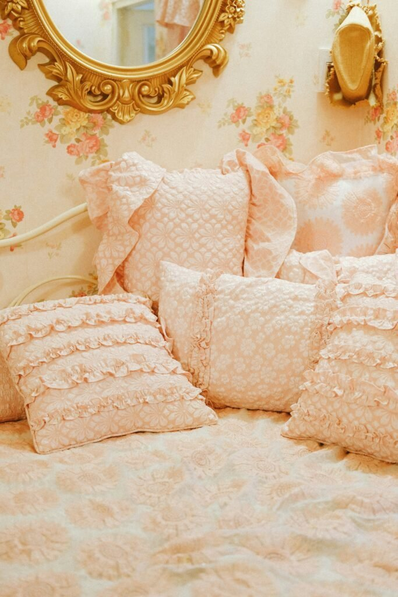
17. Swap Bright Colors for Earthy Neutrals
Red and green give way to cream, camel, charcoal, and warm brown once the holidays actually wrap up.
This doesn't require repainting anything, it's mostly about swapping smaller accent pieces like pillows and throws instead.
Earthy neutrals read as timeless rather than seasonal, which is really the whole point of a winter palette versus a holiday one.
This shift alone does a lot to make a space feel genuinely post-holiday rather than still mid-holiday.
18. Keep Some Evergreen, Lose the Rest
Not every piece of greenery needs to go the moment the ornaments actually come down.
A simple pine or eucalyptus arrangement, stripped of any ribbon or holiday attachment, reads as winter rather than Christmas.
Anything with obvious holiday styling attached should go first, before anything else gets touched.
This is a good example of editing rather than replacing something entirely from scratch.
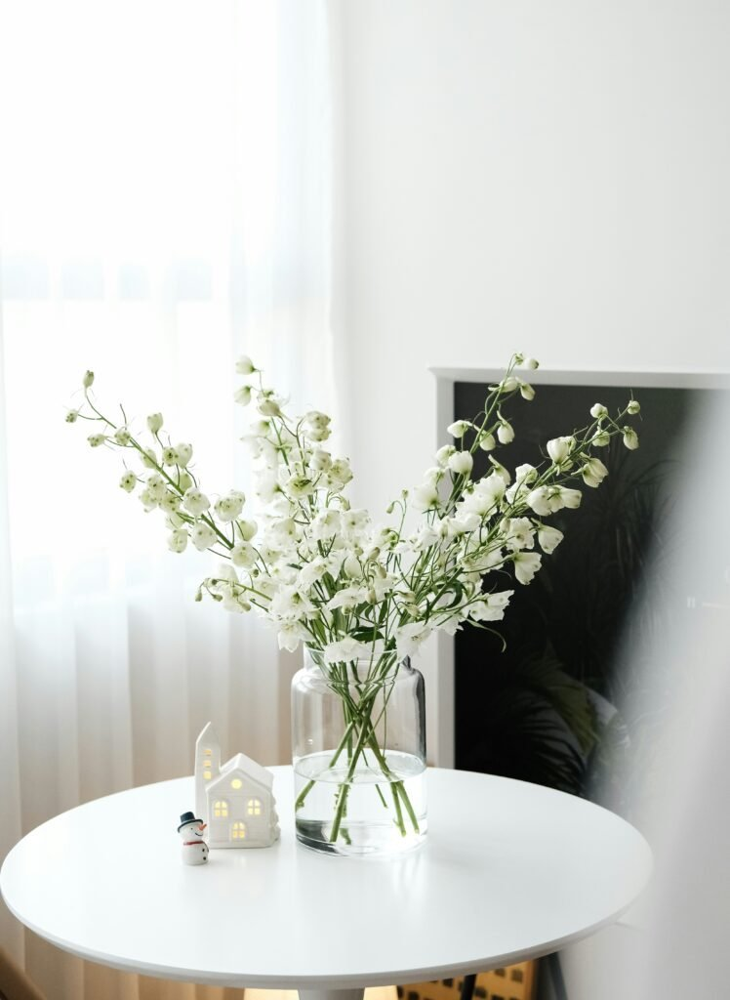
19. Swap to Warm Ambient Lighting
String lights and holiday-specific fixtures come down right along with the rest of the decorations.
A warm-toned lamp in a darker corner replaces that light without carrying any of the festive association along with it.
This matters more in winter than in any other season, given how early it gets dark outside.
Warm light does more for a room's mood in January than almost anything else on this entire list.
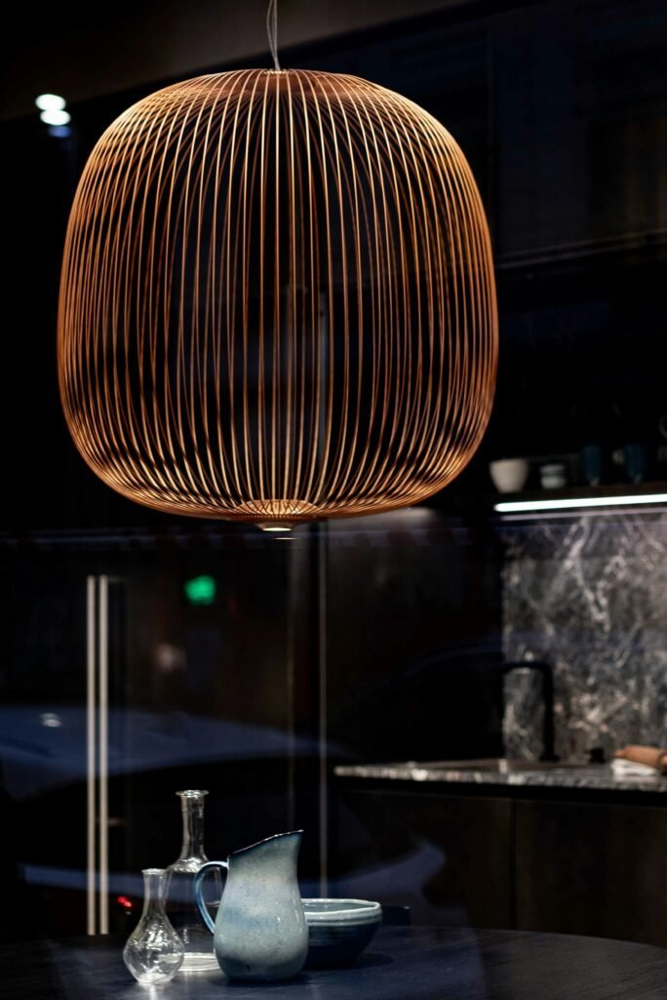
20. Layer in Cozy Throw Blankets
This is usually the first and easiest winter piece to add back into a room once the holiday decor is gone.
Mixing knit, fleece, and faux fur textures adds warmth without adding any extra color into the mix.
Cream, taupe, and charcoal tones keep the whole look calm rather than festive.
A simple swap that instantly signals the room has genuinely moved on from the holidays.
A Simple Transition Order
Take down anything explicitly Christmas-coded first, ornaments, red and green accents, holiday-specific signage, before touching anything else.
Next, assess what's actually left: furniture, rugs, lighting, art that can reasonably stay year-round without any changes at all.
Then layer in the winter-specific pieces from the list above, one or two at a time rather than all at once in a single afternoon.
This keeps the whole refresh from feeling like starting over completely from a blank room.
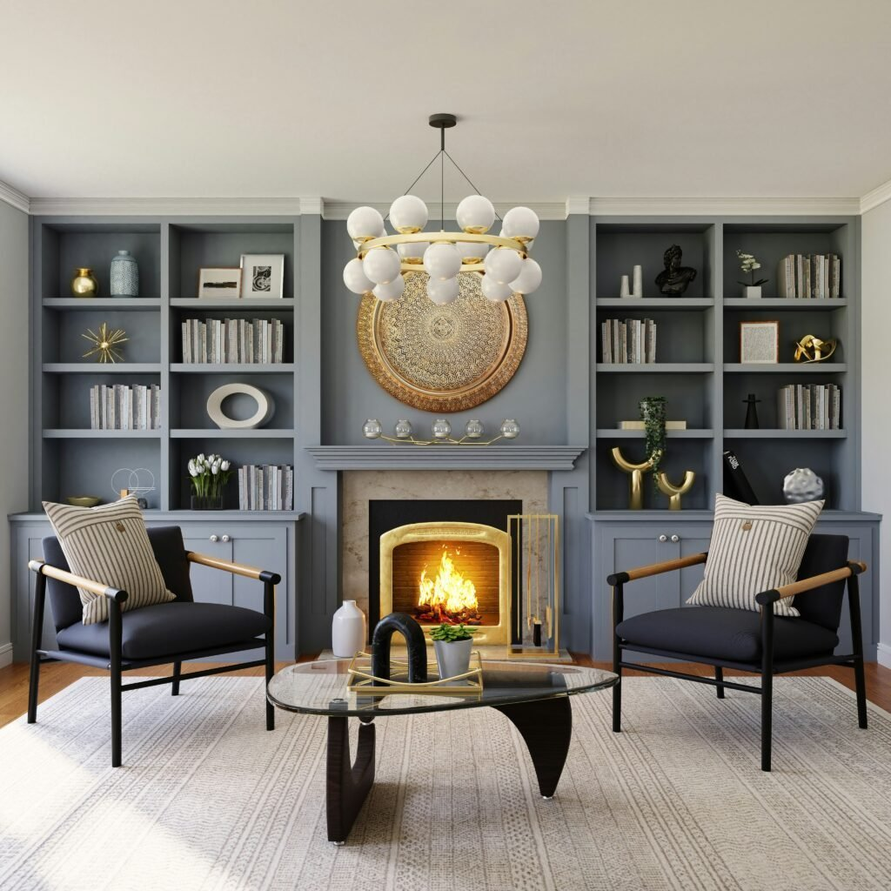
What Makes Winter Decor Different From Christmas Decor
Christmas decor leans bright, festive, and deliberately temporary by design, it's never meant to stick around past a certain date.
Winter decor works year after year and should feel more like the home's actual style, not a seasonal costume pulled out of a box.
Texture and warmth carry winter decor, rather than color and sparkle doing the heavy lifting.
That's really the core shift at play here: from festive and loud to warm and quiet.

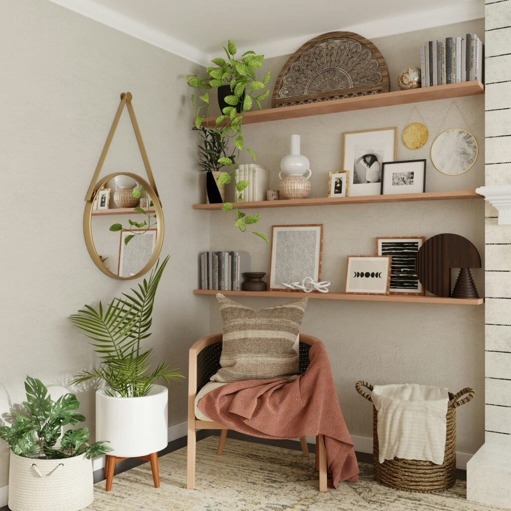
Why the House Feels Empty in January
Christmas decor does a lot of visual work, lights, garland, ornaments all add color and texture to nearly every surface in a room.
Once it's packed away, a room can look bare even if nothing structural actually changed about the space itself.
The goal of a winter transition isn't replacing all of that volume, though. It's choosing a smaller set of pieces that still carry the room through the cold months ahead.
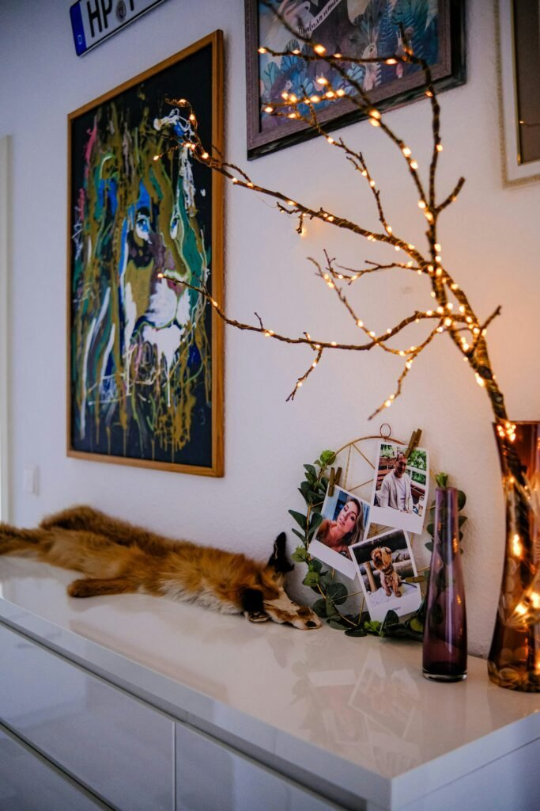
Final Thoughts
A home doesn't need to look like Christmas never happened, and it doesn't need a full redecorate either to feel right again.
Take down what's explicitly holiday, keep what still genuinely works, and layer in texture and warmth wherever the room feels bare.
Done gradually, this transition takes an afternoon or two, not a full weekend of work.
Start with whichever room gets used most daily, and work outward from there at your own pace.